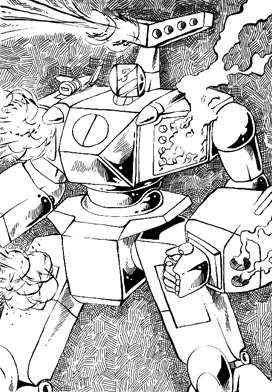

The following material is from
THE THIRD INVID
WAR, a fan supplement by
Dave Deitrich and
Chris
Meadows. Please feel free to use, copy, and distribute
it as you see fit. All we ask is that you give proper credit to us and do not
claim that it is your own work. Comments and suggestions are welcome.
THE VBF-2 BETA FIGHTER
BACKGROUND

The VBF-2 Beta Fighter was developed to be the new standard heavy Veritech
fighter for the REF during the Third Invid War. The design was perfected and
put into production shortly after the REF Jupiter Mission left for Earth in
2039, the fighter missed the close of the Second Invid War but was already in
mass production by the time the Icarus Recon Mission left Tirol in 2044. The
VBF-2 was designed to complement the VAF-8 Transatmospheric
Strike Alpha and as such included many of the same technological systems
that the VAF-8 did, including the new FF-3000 Fusion/Protoculture Variable Turbine
Engines and the SF-10 Cloaking Device. Unfortunately also like the VAF-8, the
SF-10 proved harder to manufacture in mass quantities than the planes
themselves, and thus only about 30% of VBF-2 fighters were actually equipped
with cloaking devices.
The VBF-2 was also the first REF Beta fighter produced in two distinct models with
vastly different intended purposes. The VBF-2A was the standard version of
the Beta fighter, primarily designed as a heavy weapons platform and support
craft for the smaller but more agile VAF-8 Alpha. The other model was the
VBF-2T Beta Troop Transport/Ground Support model. This version of the Beta
was designed by REF engineers after reviewing the performance of the VBF-1
Betas in the First and Second Invid Wars. The engineers found that although
not designed for it, the older Beta had commonly been used to ferry small
groups of troops to and from hot LZs (landing zones) deep inside enemy
territory. The Beta was faster and more heavily armed than the DTTS-12
Horizont transports that were designed for LZ missions, and thus had a greater
chance of success and survival. Observing this, the engineers decided to
build a specific model of the Beta for troop transport and support duties.
The resulting VBF-2T had an enlarged cargo bay capable of holding up to 12
cyclone riders in full armor, as well as multiple hatches for quick loading
and unloading. The armament of the 2T was also modified to provide better
ground support at the cost of some air-to-air combat capabilities. Because of
the size and placement of the cargo bay on the VBF-2T, the beta was capable of
only two modes of operation; fighter and guardian modes.
Like the VBF-1, the VBF-2's primary mission is to provide heavy support for
the VAF-8 Alphas. The VBF-2 can link with any model of VAF-8 and provide
increased weapons and greater thrust for the craft. The control systems for
the VAF-8 and VBF-2 were also designed to work together better, and when
linked it is possible for the Alpha pilot to control all aspects of the Beta
fighter or vice versa. More typically however the pilots would split the
workload, with the Alpha pilot concentrating on piloting and maneuvering and
the Beta gunners operating the combined craft's powerful weapon systems. Both
the VBF-2A and 2T can link to any model of VAF-8.
The VBF-2 served as the major heavy fighter for the REF (and later the
Robotech Guardian Forces) from 2040 until 2058. The design was phased out and
replaced with the VBF-4 Beta series during the late 2050s, but still remains a
common sight on RGF bases and outposts due to the great numbers that were
manufactured during its 18-year lifespan.
The VBF-2 greatly resembles the previous Beta, save for its size. The Beta
does not have different model types to differentiate between the ranks of the
people piloting it. Instead, the highlights, trim, and identification numbers
are painted in different colors corresponding to rank; standard soldiers are
colored light blue; low-ranking officers are colored red, and squadron
leaders/XOs are trimmed in green. Shadow-equipped Betas (approximately 20% of
all VBF-2 units) are painted black and are trimmed in the colors listed above,
while VBF-2T Transports are usually painted in a flat grey and highlighted as
above. All other VBF-2 Betas are colored in a camouflage scheme based on
where they are stationed, i.e. space Veritechs are often painted flat black,
desert Veritechs are painted with a light tan camouflage, etc. Some of the
shadow-equipped models are painted black with red canopies, perhaps out of
nostalgia or a whimsical sense of humor on the part of the factory
technicians.
SCHEMATICS
 Click on the icon to the left to view some pictures from the REF VBF-2 Beta
Fighter maintenance guide, document REF-5482-344-8477.
Click on the icon to the left to view some pictures from the REF VBF-2 Beta
Fighter maintenance guide, document REF-5482-344-8477.
RPG STATS
| Vehicle Type: |
Transformable Battloid, VBF series Veritech Fighter |
| Models: |
VBF-2A (Standard Model)
VBF-2T (Transport/Ground Support Model) |
| Crew: |
| VBF-2A: |
Pilot, Gunner (optional), Communication/Sensory Equipment
Operator (optional), 4 to 6 passengers if necessary. |
| VBF-2T: |
Pilot, Gunner (optional), Communication/Sensory Equipment
Operator (optional), 12 Cyclone Riders w/Cyclones. |
|
M.D.C. BY LOCATION
(1) Sensor Head 80
Hands (2) 80 each
Shoulder/Chest Retractable Missile Bays (2) 200 each
(2) Forearm Shields (2) 350 each
Upper Arms (2) 100 each
Top Missile Racks (2, side-by-side) 80 each
Upper Leg Missile Bays (2) 150 each
Lower Legs/Feet (2) 200 each
Wings (2) 150 each
Bomb Bay (VBF-2A only) 250
Passenger Bay (VBF-2T only) 300
Front Access Ramp (VBF-2T only) 100
Rear Jet Thrusters (2, side-by-side) 100 each
Rocket Thrusters (3) 200 each
(3) Main Body 450
Reinforced Pilots' Compartment 250
GU-25 Gun Pod (built into chest) 80
- Depleting the M.D.C. of the sensor head will knock out long-range
communications (reduce to 60 miles/96 km range), long-range radar (reduce to
10 miles) and laser targeting (-1 to strike)
- On the VBF-2A Beta, the forearm shields can be used to shield the main
body or body parts from damage. The character can try to block incoming
attacks of any kind, punches, blasts, and even missiles, by blocking with one
or both arms (missiles require both arms). Roll a parry. If successful, only
the arm shields take damage. NOTE: Depleting the arm shields to below their
M.D.C. will destroy the wing connection joints and damage the wing(s), making
transformation into jet or guardian modes IMPOSSIBLE! Likewise, the loss of
an arm is the loss of a wing and connection unit, making transformation
impossible. Note: The VBF-2T can NOT use the forearm shields to block
attacks.
- Depleting the M.D.C. of the main body will completely shut the mecha down.
NOTE: The VBF-2 Series Veritech incorporates the Southern Cross' laser
resistant ceramic armor, so laser weapons do only HALF damage. This does NOT
include any other energy attacks such as particle beams or ion blasts, nor
does it help against explosives.
SPECIFICATIONS
| Jet Mode with Jet Thrusters: |
Mach 2.1 (1407 mph/2264 kmph) maximum. Altitude Ceiling is 60 miles. |
| Jet Mode with Rocket Thrusters: |
Mach 8.7 (5829 mph/9379 kmph), making the Beta transatmospheric (able to
blast into outer space under its own power). |
| Jet Mode Cruising Speed: |
Mach 1 (670 mph/1078 kmph) |
| Guardian Mode: |
Hover Stationary to Mach 1 (670 mph/1078 kmph) |
| Battloid Mode Flying: |
Hover stationary to about 400 mph 644 kmph, with a maximum altitude of
12,000 feet. |
| Battloid Mode Running: |
85 mph/137 kmph |
| Battloid Mode Leaping: |
100 feet (30.5 m) up or across without booster assistance. 350 feet
(106.75 m) with jet booster assistance. |
| Height: |
40 ft. Battloid mode
24 ft. Jet mode
34 ft. Guardian mode |
| Width: |
32 ft. Battloid mode
72 ft. Jet and Guardian modes |
| Length: |
30 ft. Battloid mode
38 ft. Jet and Guardian modes |
| Weight: |
| VBF-2A: |
19 tons without missiles, 24 tons fully loaded (including
missiles and bombs). |
| VBF-2T: |
21 tons unloaded, 33 tons maximum load. |
|
| Cargo: |
| VBF-2A: |
Bomb Bay that can hold up to 20 bombs (approx. 10 ft. by 6
ft. by 6 ft.); Three Cyclones may be removed from storage compartment which
may then be used to hold cargo. |
| VBF-2T: |
Cargo/Troop Compartment can carry up to 12 tons of weight,
12 Cyclone Riders in full combat armor, or 20 people in cramped conditions
without armor. |
|
| Main Engine: |
Two FF-3000 Fusion/Protoculture turbines |
| Secondary Engines: |
3 FF-3800 nuclear fusion rocket engines. |
| Range: |
24 Protoculture cells will give the mecha an active combat life of about
two years. The mecha can operate on half as many cells (12) for 12 months,
but maximum speed is reduced by half and the mecha is at -1 to strike. As a
last resort, the mecha can operate solely on fusion power, but maximum speed
is reduced by 75%, the head lasers cease to function, and the mecha is at -2
to strike and -2 to dodge. |
WEAPON SYSTEMS
- MM-50S SUPER MULTI-MISSILE SYSTEM: The Beta has two MM-50 systems
built into each chest/shoulder area in Battloid and accessible on the right
and left of the cockpit in Jet or Guardian mode. The retractible systems
raise their missile launchers from protective storage bays to fire volleys of
short-range missiles. The two MM-50 systems can fire independently or
simultaneously. The automatic reload system enables the pilot to fire his
entire payload of 100 missiles in one melee (this is possible by firing both
MM-50 systems simultaneously, launching 20 missiles (10 each) each melee
attack up to five times. NOTE: The MM-50S can be launched in all modes.
- Primary Purpose: Assault
- Secondary Purpose: Anti-Aircraft
- Missile Type: Standard RDF/REF short-range missiles, usually high
explosive, armor piercing, or plasma. Different types are rarely mixed, so
all 40 missiles per launcher would be the same. Of course, missiles can be
mixed if desired.
- Mega-Damage: Varies with missile type.
- Rate of Fire: One at a time, or in volleys of two, four, six,
eight, or ten (or twenty, if both launchers are fired at the same time). One
volley counts as one attack. the number of attacks per melee is equal to the
pilot's combined hand to hand attacks per melee (usually 4 or 5).
- Payload: 50 missiles per each launcher, for a total capacity of
100.
- NOTE: The war-torn world makes the availability of missiles an
extremely rare event. Players should be careful not to expend all their
character's missiles too soon, because it may be a long time before more are
found.
- GR-20P LEG MINI-MISSILE LAUNCHERS (VBF-2A ONLY): Each leg has a
mini-missile launcher built into the thigh. These missiles can be launched
only in Battloid mode.
- Primary Purpose: Assault/Defense
- Secondary Purpose: Anti-Personnel
- Missile Type: Any mini-missile except Plasma. Armor-Piercing is
standard-issue.
- Mega-Damage: Varies with missile type.
- Rate of Fire: Volleys of 2, 4, 6, 8, 10, 16, or 20 (all) per
launcher; both launchers may be fired simultaneously.
- Payload: 20 mini-missiles per launcher for a total of 40.
- MEDIUM-RANGE, TOP MOUNTED MISSILES (VBF-2A ONLY): These are the
missile racks seen on top of the Beta in Battloid mode and recessed into the
rear of the Beta in Jet or Guardian modes. The missiles can be launched while
in any configuration.
- Primary Purpose: Assault
- Secondary Purpose: Anti-Mecha
- Missile Type: Standard RDF/REF medium-range missiles, usually
high-explosive, plasma, or armor piercing. Of course, any medium range
missiles can be used.
- Mega-Damage: Varies with missile type.
- Rate of Fire: One at a time or in volleys of two, three, or four.
- Payload: Four missiles per each launcher (2), for a total of eight.
- NOTE: Medium-range missiles are more scarce than short-range.
- TWO LONG RANGE MISSILES: These can be seen in the mid-chest area of
the Beta in Battloid, or on either side of the cockpit in Jet and Guardian
modes. These can be launched only from Jet or Guardian mode.
- Primary Purpose: Heavy Assault
- Secondary Purpose: Anti-Spacecraft
- Missile Type: Standard RDF/REF long-range missiles, usually proton,
reflex heavy, and reflex multi-warhead.
- Mega-Damage: Varies with missile type.
- Rate of Fire: One at a time.
- Payload: Two
- NOTE: Surprisingly, the long-range missiles are about as rare as
the short-range missiles because there are few mecha that use them. All
reflex and proton missiles are extremely rare.
- BOMB BAY (VBF-2A ONLY): The bay can hold 20 bombs, or up to 12
passengers, being slightly larger than that of its predecessor. However, it
is often used for deploying relay buoys instead. Relay buoys act as miniature
satellites, relaying radio signals through space. These signals may be
telemetry, radio, or picture relays. The radio range for these buoys is 400
miles, and their M.D.C. is 30.
- Primary Purpose: Ground Assault
- Secondary Purpose: Satellite Deployment
- Missile Type: Bombs are equal to short or medium range missiles.
Usually fragmentation or high-explosive.
- Mega-Damage: Varies with the type of bomb.
- Rate of Fire: Volleys of 2, 4, 6, 8, or 10.
- Payload: The bomb bay can hold up to 20 bombs.
- NOTE: These are bombs, not guided missiles. As such, they have the
following penalties: -4 to strike a stationary ground target, -6 to strike a
moving target(s), and -10 to hit a small moving target like an Invid Scout or
vehicles. Bombs are usually used against large stationary targets.
- BETA GU-25 25mm QUAD-BARREL INTERNAL GUN POD: This weapon is
exactly like the GU-25 handgun used by the VAF-8 Alpha Fighters. The
difference is that it is built into the body of the beta and has an automatic
feed and a greater ammunition payload. To reload the Beta GU-25 requires
tools, a mechanic, and 4D4 minutes. The person must crawl into the gun bay
and undo the ammo compartment and reload. To modify the ammo from a
conventional GU-25 gun pod requires an additional 1D4 hours per clip.
- Primary Purpose: Assault/Defense
- Range: 4000 feet
- Mega-Damage: Does 3D6 MD short burst, 6D6 medium burst, 1D6x10 full
melee burst.
- Rate of Fire: Short or medium bursts count as one attack. The
pilot can fire as many bursts as his combined hand to hand attacks per melee.
A full melee burst takes the place of all other attacks.
- Payload: 160 short bursts, or 80 medium bursts, or 40 full melee
bursts.
- ARM-MOUNTED ION BLASTERS: Each arm has four ion blasters mounted on
the ends. These weapons may be fired in any mode, but in fighter and guardian
modes are limited to firing directly in front of the mecha only. Note:
Since the VBF-2T does not have a battloid mode, the Ion Blasters can only fire
forward on these mecha.
- Primary Purpose: Assault/Defense
- Range: 4000 feet
- Mega-Damage: Each blaster does 2D6. Two barrels fired at once do
4D6. Three do 6D6. All four do 1D6x10. Both arms may be fired at once
(counts as one melee attack). 1, 2, 3, and 4 barrels all count as one melee
attack.
- Rate of Fire: Blasts only; equal to the hand-to-hand attacks of the
person firing them.
- Payload: Unlimited
- RAPID-FIRE LASER TURRETS (2, VBF-2T ONLY): In order to assist the
VBF-2T Transport Beta in recovering or deploying personnel and to give cover
to ground troops during transfer operations, the VBF-2T has two rapid-fire
laser turrets mounted on the underside of the mecha. These turrets can rotate
360 degrees and can elevate up and down in a 90-degree arc. They can shoot in
any direction BELOW the VBF-2T. These lasers are usually controlled by the
Gunner.
- Primary Purpose: Ground Support
- Secondary Purpose: Defense
- Range: 2000 ft (609 m)
- Mega-Damage:
- Single "aimed" shot (1 laser; +3 to strike): 1D6 M.D.
- Dual "aimed" shot (both lasers; +3 to strike): 2D6 M.D.
- Short burst, both lasers (+1 to strike): 1D4x10 M.D.
- Long burst, both lasers, one target (counts as two attacks, no strike
bonus): 2D4x10 M.D.
- Burst shooting wild/spraying (-1 to strike, can be short or long
burst): 2D6 M.D. to everything it hits.
- See aimed, burst, and shooting wild rules in the modern weapon
proficiency section.
- Rate of Fire: Equal to pilot's (or gunner's) combined hand to hand
attacks. Single and dual "aimed" shots and short bursts count as one attack.
Long bursts count as two attacks, and shooting wild takes ALL melee attacks in
a melee round.
- Payload: Unlimited.
- HAND TO HAND COMBAT: The VBF-2 Beta can engage in hand-to-hand
combat if absolutely necessary. The VBF-2T is limited to kick and stomp
attacks only, however. The Beta's hands are so constructed that it cannot
hold a GU or EU gun pod of any kind. It has to rely on its built-in weapons
and speed in a fight.
- Punch does 1D6 M.D. in Battloid
- Kick does 1D6 M.D. in Guardian/Battloid
- Body Flip/Throw does 1D6 M.D.
- Body Block/Tackle does 1D6 M.D.
- Stomp does 1D4 M.D.
STANDARD EQUIPMENT
- SF-10 SHADOW CLOAKING DEVICE: About 20% of VBF-2 Beta Fighters are
equipped with the SF-10 Shadow Cloaking Device. The stats for this device are
the same as those for the VAF-8 Alpha Fighter.
- LASER-RESISTANT CERAMIC COATING: Invented during the construction
of Southern Cross mecha, this coating scrambles laser tracking and reduces
laser damage by half (lasers ONLY).
- RADAR: 40 mile range. Can identify and track up to 60 targets
simultaneously.
- BACKUP RADAR: 10 mile (16 km) range. Can identify and track up to
20 targets simultaneously.
- RADIO COMMUNICATIONS: Wide band and directional radio and video
telecast capabilities. Range is 600 miles (945 km) or can be boosted
indefinitely via satellite relay.
- LASER COMMUNICATIONS: Long-range, directional communication
system. Effective range: 100,000 miles (157,500 km).
- COMBAT COMPUTER: Calculates, stores, and transmits data onto the
cockpit computer screen, heads-up display (H.U.D.), or the pilot's helmet
display. Patches in with targeting computer and VAF-8R reconaissance
correlation computer.
- TARGETING COMPUTER: Assists in the tracking of enemy targets and
is partly responsible for the VBF-2's high strike bonus.
- LASER TARGETING SYSTEM: 100 mile (160 km) range. Assists in the
striking of enemy targets and is partly responsible for the VBF-2's high
strike bonus.
- MOTION DETECTOR AND COLLISION WARNING SYSTEM: 500 ft (152.5 m)
range. Sounds an alarm and red light warns pilot of impending collision and/or
immediate target.
- TELESCOPIC OPTICAL ENHANCEMENT: 4000 ft (1218 m) range, up to 64x
magnification. 20 ft (6.1 m) field of vision.
- THERMO-IMAGER: 4000 ft (1218 m) range. A special optical heat
sensory unit that allows the infrared radiation of warm objects to be
converted into a visible image. It also enables the pilot to see in darkness,
shadows and through smoke.
- NIGHTVISION OPTICS: 4000 ft (1812 m) range. An image intensifier
that is passive, meaning it emits no light of its own, but relies on ambient
light which is electronically amplified to give a visible picture.
Nightvision can not work in absolute darkness (but infrared and thermo-imagers
can).
- EXTERNAL AUDIO PICKUP: 300 ft (91.5 m) range. A sound
amplification listening system that can pick up a whisper 300 ft away.
- HEAD SPOTLIGHTS: 600 ft. (182 m) range.
- EJECTOR SEAT: In case of an emergency, all three crewmembers can
be instantly ejected. No ejection seats are provided for passengers in the
cargo bay, unfortunately.
- CE-1 CYCLONE EJECTOR SYSTEM: Also in case of an emergency, all
three VR-135 Forager Cyclones will also be ejected from the doomed mecha.
This system is activated automatically when the pilot pulls the activation
lever for his ejection seat. The cyclones will deploy parachutes once outside
of the mecha and then land within 1D6x1000 feet of the pilot and crew. This
system was installed to allow pilots to retrieve their cyclones even after
their veritechs had been destroyed.
- SELF-DESTRUCT: A last ditch effort to prevent the capture of a
Veritech unit (usually preceded by the pilot's ejection from the Veritech) is
self-destruction. Explosive damage is fairly contained. A VBF-2 Beta without
missiles (or few) does 3D6 x 10 M.D., but a Veritech with all or most of its
missiles (35 or more) will do 3D6 x 100 M.D. to a 50 ft (15.2 m) radius.
- SMOKE SCREEN SYSTEM: The VBF-2 Beta can emit a thick cloud of
smoke from its rear to create immediate cover. The smoke screen system can
discharge a maximum of 4 bursts before needing replacement (smoke missiles can
be converted to function in the system). Each burst will cover a 60 ft area
(19.8 m).
- HEAT AND RADIATION SHIELDS: Special shielding prevents the
penetration of life-threatening heat and radiation.
- INDEPENDANT OXYGEN AND CIRCULATORY SYSTEM: Built-in tanks provide
one (1) week of continuous oxygen. With the special recycling systems, this
may be extended to four (4) weeks.
- SURVIVAL GEAR: The VBF-2 includes three VR-135 Forager Cyclones,
six weeks' compact emergency rations, an emergency signal beacon, three
first-aid kits, and a life raft. There is space for an energy rifle to be
attached to each ejector seat, and the crew of course carry side-arms.
SPECIAL RULES FOR GUNNERS
NOTE: For the purposes of this section, the "gunner" is anybody who has
weapon systems skill and is in the gunner's station of the Beta, whether he is
the Beta Gunner, Comm Officer, or just somebody along for the ride.
The gunner receives as many attacks per melee as if he had equivalent-level
Beta Basic Combat (or Expert Combat, if he has Expert Combat). He can control
all the weapons in the Alpha (if the Beta is connected and the Alpha pilot
allows) and Beta, or just choose certain weapons (as many as he thinks he can
handle) before combat begins. When the gunner is controlling a weapon, nobody
else can use it until he releases control, even if the gunner never fires it!
Weapons to be controlled by the gunner must be declared before combat begins.
It takes one full melee for the gunner to change to different weapons, and
during that time he can fire no weapons, and none of the weapons he has been
firing, or is about to assume control of, may be fired by anybody else until
they're completely programmed in.
The gunner can control only weapons fire, not hand-to-hand combat. The gunner
may control the gun pod of the Alpha when it is mounted on the plane. When
the Alpha is holding it in its hand, however, he may NOT control it.
When the gunner is firing a weapon, he receives an additional +1 to hit. He
also receives the +2 bonus to strike if the Beta is connected to a VAF-8R
Alpha with a REO operating the sensory equipment, or the +1 bonus if one such
plane is operating nearby. These bonuses do NOT apply to missiles (so
missiles will probably not be among the weapons the gunner chooses to operate)
but DO apply to mini-missiles.